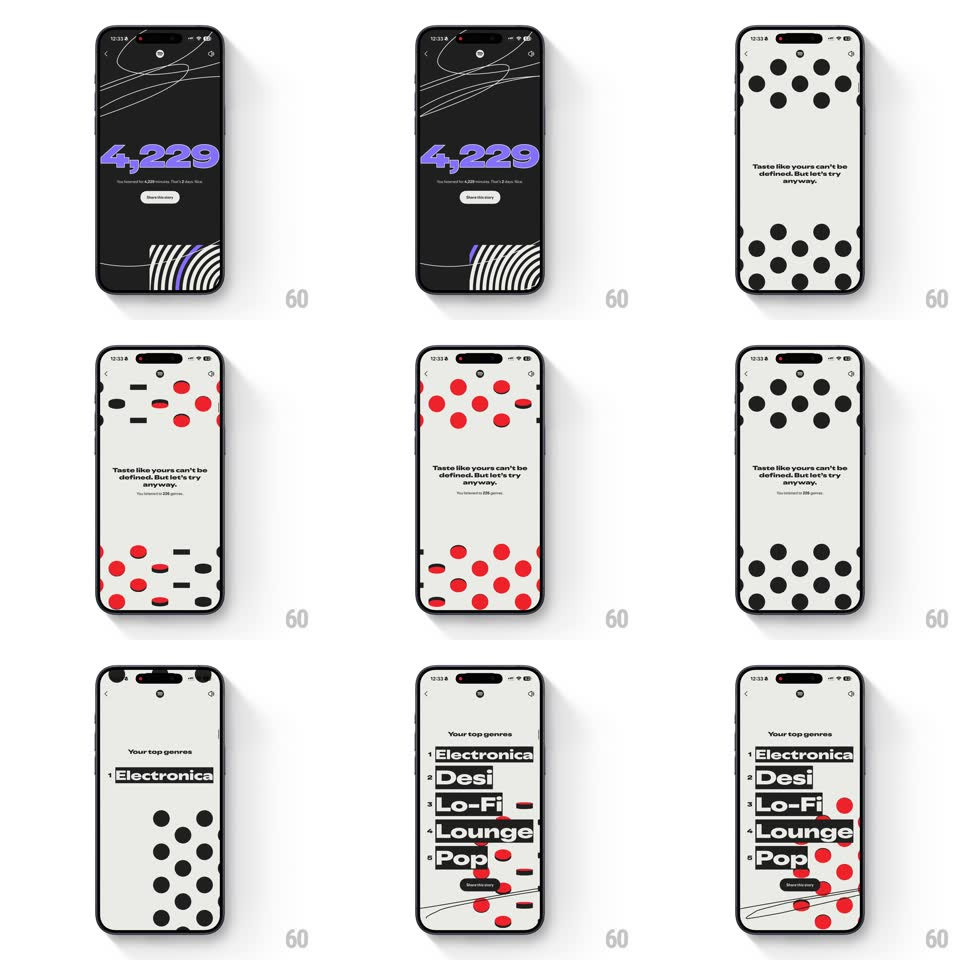

Media
Frame-by-frame

Rebuild this animation 1:1: Spotify Wrapped's minutes-and-genres run - a huge purple minute count on black, then the "Taste like yours can't be defined" scene where dots rain down with physics before the genre list slides up through them.

Rebuild this animation 1:1: Spotify Wrapped's minutes-and-genres run - a huge purple minute count on black, then the "Taste like yours can't be defined" scene where dots rain down with physics before the genre list slides up through them. ## Integration Integration: stack-agnostic spec - springs given as stiffness/damping, timed motions as duration + curve; map every value to your framework and animation library of choice. ## Scene Scene one: black, a huge purple "4,229" (minutes listened) with its caption and a Share pill, white warped stripes at the bottom edge. Scene two: cream, the copy "Taste like yours can't be defined. But let's try anyway." with a genre-count sub-line, as black dots fall from the top and settle; the dots flash red; then "Your top genres" (Electronica, Desi, Lo-Fi, Lounge, Pop) slides up as a big numbered list over the settled dots. ## Motion spec Pattern: staggered text reveals over physics-driven falling dots. - The minute count types on as a rolling counter (0 -> 4,229, 800ms, ease-out) at full width; caption and Share pill fade up after (200ms, 100ms apart). - Scene two: the copy staggers in line by line (150ms apart, 20px rise each), then dots begin to rain - each a physics body with gravity, a slight random horizontal drift, and a soft bounce (restitution ~0.4) settling into piles along the bottom. - Mid-scene the dots flip color (black -> red, 150ms wave sweeping left to right) and some roll to new rest positions - the field rearranges like it is thinking. - The genre list slides up from the bottom (spring ~320/18), each entry stamping in 70ms apart with its number chip, dots nudged aside as the list lands. ## Calibration - Dots are real physics - no keyframed arcs; the pile-up must look accidental. - The number 4,229 is the hero - it owns its scene alone before any other text appears. ## Reduced motion Counter counts without rolling; dots fade in already settled; list fades up. ## Don't miss - The genre list is set huge and cropped-tight - numbers hug the left edge, names run wide. - The red flash is one wave, not a shimmer - decisive, like a stamp.